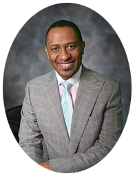

Antioch Baptist Church - Deanwood
Tagline
In December 2014, the Antioch Baptist Church in Deanwood unanimously elected Rev. Dr. Eric E. Baldwin as their 6th Senior Pastor.
Dr. Baldwin graduated from North Carolina Central University with a Bachelor's in Business Management; earned his Master's of Divinity at the Samuel Dewitt Proctor School of Theology at Virginia Union University, and in May of 2014, Dr. Baldwin earned his Doctorate of Ministry from the United Theological Seminary.
Prior to pastoring Antioch Baptist Church in Deanwood, Dr. Baldwin pastored the Manasseh Baptist Church in Greensboro, North Carolina for ten years, beginning at the age of 28. Under Dr. Baldwin's leadership, the church membership grew, new ministries were formed, and their budget increased.
A sound Bible based preacher/teacher, Dr. Baldwin has restructured the numerous ministries within Antioch to better serve the body of Christ, as well as Ward 7 and beyond in the Nation's Capitol. He serves as the Baptist Convention of D.C. and Vicinity's Assistant Recording Secretary, and as the Assistant Chaplain and Protocol Manager of Woodbridge Alumni Chapter of Kappa Alpha Psi. He was recently appointed District Leader of DC and vicinity of Global United Fellowship.
The Key to the City of Greensboro, North Carolina; National Dean's List, and Who's Who in American Professionals are just a few of Dr. Baldwin's other accomplishments. A published preacher, Dr. Baldwin has been recognized by having his sermons published nationally.
Dr. Baldwin's lecture and speaking engagements include Shaw University (Raleigh, NC); Apex School of Theology (Durham, NC); North Carolina A&T State University (Greensboro, NC), and the Reformed Theological Seminary (Jackson, MS), as well as engagements across the United States of America, the Caribbean, and South America.
Prior to full-time Pastoral Ministry, Dr. Baldwin excelled in Corporate America. While at Central Carolina Bank; now SunTrust Bank, Dr. Baldwin managed his branch's deposits. Under his leadership, deposits grew from $900,000 annually to $2.5 million annually.
The pride of Dr. Baldwin's life is his family. He is married to the former Davishia Anne Jones, and they have two daughters; Erica and Elisha.